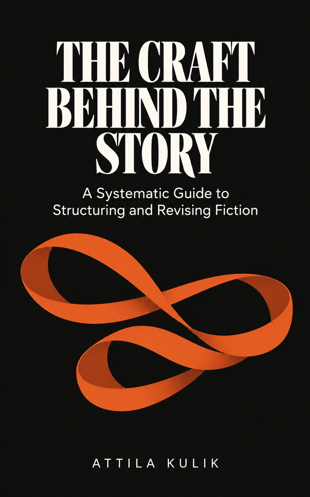

The Scene and Its Materials
Scenes, sequels, dialogue exchanges and descriptive details: the building blocks of a draft.
A book for fiction writers
A Systematic Guide to Structuring and Revising Fiction
Move from “something isn’t working” to a question you can answer. A practical guide to the choices that shape a novel, from a single scene to the architecture of the whole book.
Ebook by Attila Kulik · Available on Kindle and Apple Books

18 chapters 4 parts 5 appendices
A guide to writing and revision
Advice about fiction often speaks of pace, tension or voice across an entire book. But revision happens in parts: a scene cut, a chapter moved, a viewpoint withdrawn, a reveal brought forward.
The Craft Behind the Story examines each unit a writer can change. What is it for? What would the reader miss if it were gone? And how can you tell whether it is doing its work?
Four parts follow the scale of a novel, then bring the tools together in a structural edit.
Scenes, sequels, dialogue exchanges and descriptive details: the building blocks of a draft.
Transitions, chapter breaks, backstory, flashbacks and multiple timelines: how the pieces connect.
Openings, middles, endings, viewpoint, subplots, reveals, arcs and theme.
Series, genre and the structural edit: an order for using the earlier tools on a manuscript.
Each chapter pairs close reading with questions and revision tools, so an observation about a story can become a choice about your own.
Seven to ten questions per chapter that you can answer from your own draft.
Symptoms, causes and possible repairs, with published works that bend the pattern successfully.
An invented family novel runs through the book, showing the same draft examined at different scales.
Chapter-level revision prompts, plus a symptom index and master checklist in revision order.
Whether you are planning a novel or revising one, The Craft Behind the Story offers a way to examine its parts and decide what to change next.